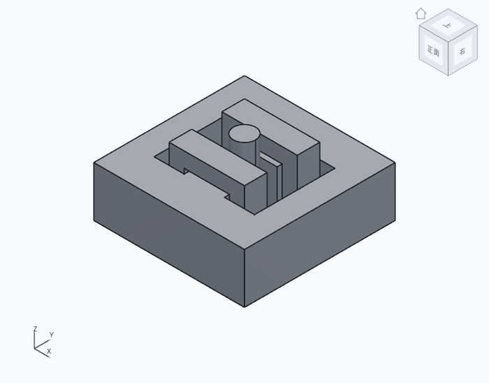
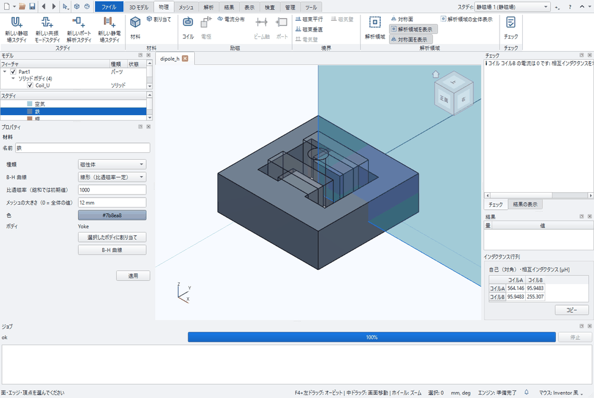
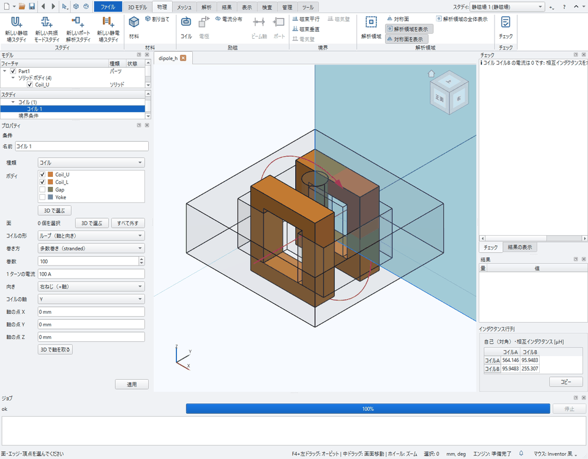
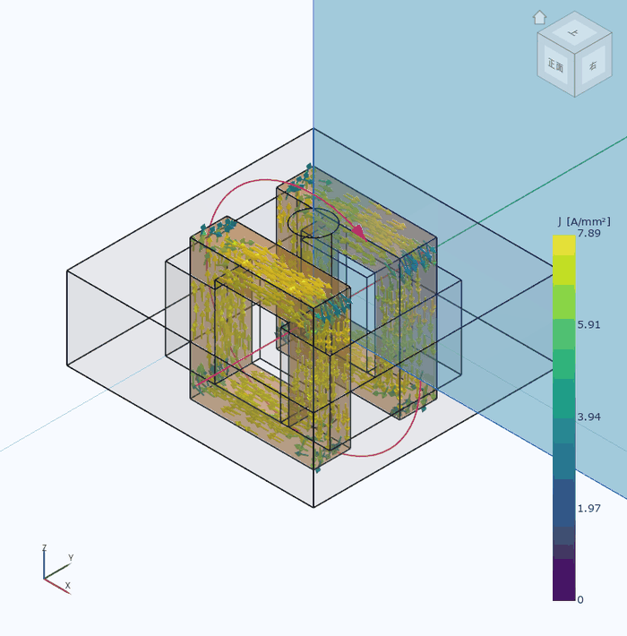
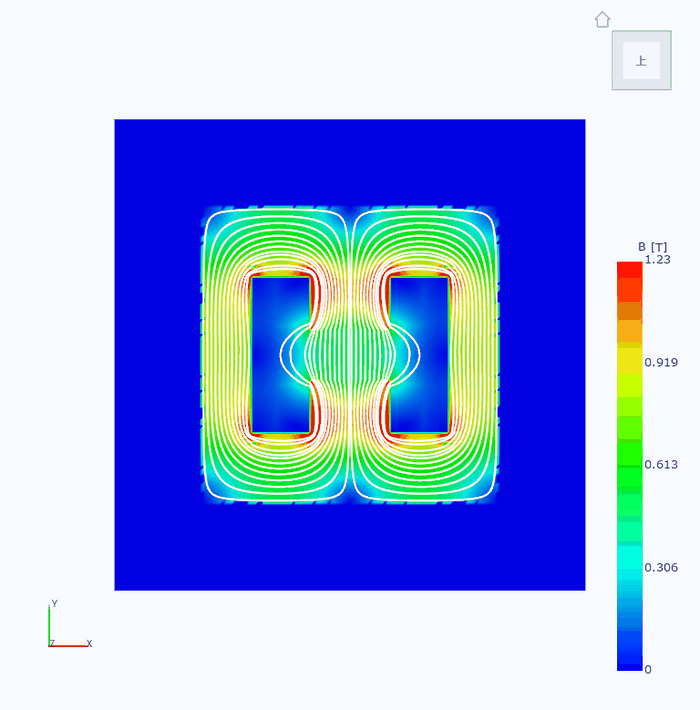
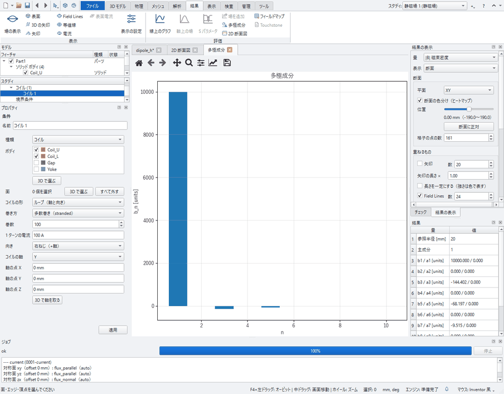

第 20 章
静磁場解析の例題: H 型双極電磁石
静磁場 この章では、鉄のヨークと 2 つのレーストラックのコイルからなる H 型の双極電磁石を解き、ギャップ（50 mm）の磁場と、場の質（多極成分）を調べます。鉄の材料、複数のボディのコイル、ギャップの空気のボディの使い方が分かります。設定の済んだものは examples/dipole_h.emrm です。ビームの軸は z、ギャップの磁場は y 向きです。
20.1 形状（4 つのボディ）
| ボディ（名前） | 作り方 | 材料 |
|---|---|---|
| ヨーク（［Yoke］） | 300 × 300 × 100 mm の直方体から 200 × 160 mm の窓を切り取り、上下に 80 × 55 mm の磁極を結合（ギャップ y = ±25 mm） | 鉄（磁性体 μr = 1000） |
| 上のコイル・下のコイル（［Coil_U］・［Coil_L］） | 150 × 45 × 170 mm の直方体から 90 × 45 × 110 mm を切り取った枠（磁極を囲む） | 銅（導体） |
| ギャップの空気（［Gap］） | ビームの軸のまわりの円柱（直径 44 mm、z = ±100 mm） | ギャップの空気（空気、メッシュ 4 mm） |


20.2 材料
ヨークを選んでリボンの［物理］タブ → ［材料］パネル → ［材料］をクリックし、名前
鉄、［種類］を［磁性体］、［比透磁率］を1000、［メッシュの大きさ（0 = 全体の値）］を12 mmにして［適用］を押します。
図 20-2 材料「鉄」を選ぶと、3D ビューでは鉄のボディ（ヨーク）だけが濃く表示されます。 2 つのコイルを（Shift で）選んで材料を作り、名前
銅、［種類］を［導体（コイル）］、メッシュ10 mmにします。2 つのボディに同じ材料が付きます。ギャップの円柱を選んで材料を作り、名前
ギャップの空気、［種類］を［空気］、メッシュ4 mmにします。

20.3 コイル
2 つのコイルを選んでリボンの［物理］タブ → ［励磁］パネル → ［コイル］をクリックし、［ループ（軸と向き）］・［多数巻き（stranded）］・巻数 100・電流 100 A・［右ねじ（+軸）］・軸 ［Y］（軸の点は原点）にして［適用］を押します。1 つのコイルの条件に 2 つのボディを入れると、両方に同じ巻数・電流・向きが付きます。上下とも +y の向きに右ねじで回るので、ギャップの磁場は +y になります。


20.4 対称面・メッシュ・実行
対称面を XY・YZ・ZX の 3 つ（境界は自動）、全体のメッシュを
60 mmにします。自動の境界は、軸（y）を含む XY・YZ 面が磁束平行、軸に垂直な ZX 面（ギャップの中央の面）が磁束垂直になります。リボンの［物理］タブ → ［励磁］パネル → ［電流分布］で、コイルの中を電流が回ることを確かめます（起磁力 10000 / 10000 A·turn、|J| の最大 8.4 A/mm²。内側の角で大きく、平均は 7.4 A/mm²）。

図 20-4 電流分布のプレビュー（対称で全体に折り返して表示）。 リボンの［解析］タブ → ［実行］パネル → ［実行］で解きます（約 20 秒、1.3 万要素）。

20.5 結果


ギャップの中心の By は約 0.491 T です。鉄の μr が無限大でギャップの外の漏れが無い理想の値 μ0NI/g = 0.503 T（NI = 2 × 10000 A·turn、g = 50 mm）より少し小さくなります。
リボンの［結果］タブ → ［評価］パネル → ［多極成分］をクリックし、参照半径
20mm を入れます。中央のタブに多極成分の表とグラフが出ます。
図 20-6 多極成分（R = 20 mm）。b1 = 10000、b3 ≈ −144、b5 ≈ −68 units。シムの無い平らな磁極なので 6 極成分が出ます。

鉄を飽和ありにしたときの結果は第 18 章にあります。